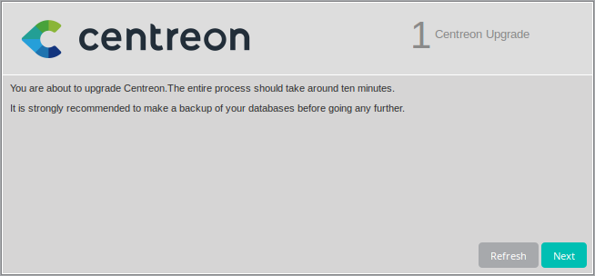
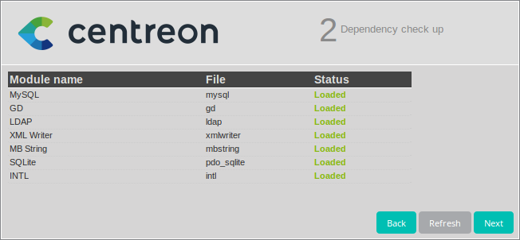
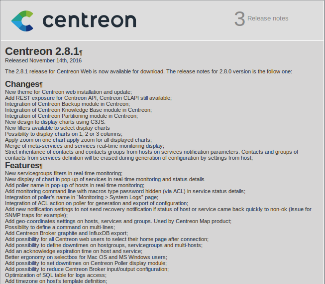
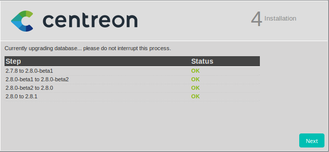
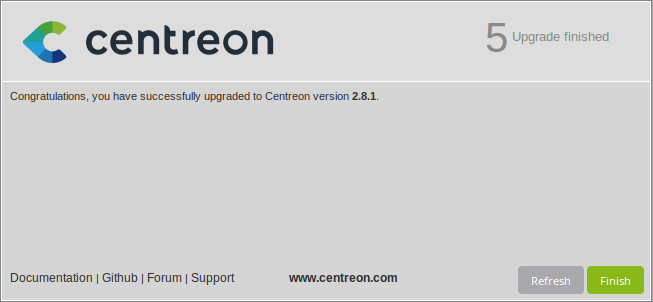
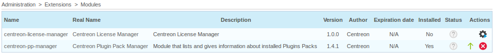
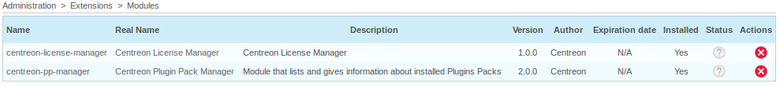

From Packages¶
Centreon 3.4 includes Centreon Web 2.8, Centreon Engine 1.8, Centreon Broker 3.0. It comes in two operating system flavors, either CentOS 6 or CentOS 7.
Warning
If your centreon contains the centreon knowlegdebase module (AKA Centreon KB), please first uninstall the module (from the web) in order to avoid upgrade problem. Centreon KB is now embedded into Centreon since the version 2.8.0.
Prerequisites¶
The prerequisites for Centreon Web 2.8 have evolved. It is strongly recommended to follow the instructions to set up your platform.
Centreon advises you to use MariaDB instead of MySQL.
| Software | Version |
|---|---|
| MariaDB | >= 5.5.35 |
| MySQL | >= 5.1.73 |
Dependent software¶
The following table describes the dependent software:
| Software | Version |
|---|---|
| Apache | 2.2 |
| GnuTLS | >= 2.0 |
| Net-SNMP | 5.5 |
| openssl | >= 1.0.1e |
| PHP | >= 5.3.0 |
| Qt | >= 4.7.4 |
| RRDtools | 1.4.7 |
| zlib | 1.2.3 |
Backup¶
Be sure that you have fully backup of your environment for all the following server :
- Central server
- Database server
- Reporting Centreon MBI server
Centreon repository upgrade¶
If you are already a Centreon ISO user, you need to update your Centreon .repo file to get software that is part of Centreon 3.4 (namely Centreon Web 2.8 and associated components). Run the commands for your operating system.
CentOS 6¶
$ rm -f /etc/yum.repos.d/ces-standard.repo /etc/yum.repos.d/centreon-stable.repo
$ wget http://yum.centreon.com/standard/3.4/el6/stable/noarch/RPMS/centreon-release-3.4-4.el6.noarch.rpm
$ yum install --nogpgcheck centreon-release-3.4-4.el6.noarch.rpm
CentOS 7¶
$ rm -f /etc/yum.repos.d/ces-standard.repo /etc/yum.repos.d/centreon-stable.repo
$ wget http://yum.centreon.com/standard/3.4/el7/stable/noarch/RPMS/centreon-release-3.4-4.el7.centos.noarch.rpm
$ yum install --nogpgcheck centreon-release-3.4-4.el7.centos.noarch.rpm
Warning
If you’re using Centreon modules Centreon BAM, Centreon MAP4, CentreonMBI or Centreon EPP please contact our Support to have the new repo of each module.
Core components upgrade¶
Stop Centreon components¶
Warning
Before to start the update, check if you don’t have any Centreon-Broker retention files.
Stop Centreon Broker and Centreon Engine on all poller:
# service centengine stop
# service cbd stop
Update components¶
In order to update the Centreon monitoring interface, simply run the following command:
# yum update centreon
Warning
If you encounter dependency problems with centreon-engine-webservices, please remove this RPM that is now deprecated. Run the following line: # yum remove centreon-engine-webservices
If you come from Centreon 2.7.0-RC2, in order to avoid the rpm naming problem please launch the following command line:
# yum downgrade centreon-2.7.0 centreon-plugins-2.7.0 centreon-base-config-centreon-engine-2.7.0 centreon-plugin-meta-2.7.0 centreon-common-2.7.0 centreon-web-2.7.0 centreon-trap-2.7.0 centreon-perl-libs-2.7.0
Restart web server¶
Due to the installation of PHP-intl it is necessary to restart the Apache web server to load new extension.
# service httpd restart
Update poller¶
Repeat this procedure on all your poller :
- Update repo
- Update packets
Warning
You must have on all your environment (Central and Poller) the same version of Centreon Engine 1.7 and Centreon Broker 3.0.
Conclude update via Centreon web interface¶
Connect to your Centreon web interface and follow instructions to update Centreon’s databases. During this process a new configuration file will be created.
Presentation¶
Check dependencies¶
This step checks the dependencies on php modules.
Release notes¶
Upgrade the database¶
This step upgrades database model and data, version by version.
Finish¶
Generate and export configuration to all poller¶
To conclude the installation it is necessary to generate Centreon Engine and Centreon Broker configuration. To perform this operation go to Configuration > Poller menu and click on the generate configuration icon.
Restart all Centreon components on all poller¶
Start Centreon Broker and Centreon Engine on all poller:
# service centengine start
# service cbd start
Then, if all is ok, go on the Centreon interface and log out and follow the steps :
EMS/EPP upgrade¶
Note
Not a EMS/EPP user ? You might still find Centreon Plugin Packs very useful to configure your monitoring system in minutes. You will find installation guidance in the online documentation.
If you use additional Centreon modules you might need to update them too, for them to work properly with your new Centreon version. This is particularly true for EMS/EPP users.
Warning
In this case you need to contact our Support that will give you the link to set up the new repo for each module. If you’re using Centreon BAM, you must have the great repo to upgrade your Centreon. The following option should not be used : # –skip-broken
Repository update¶
Just like for Centreon ISO, the .repo file needs to be updated to use the 3.4 release. Please ask Centreon support team if you do not know how to perform this operation.
Package update¶
Run the following command on your central server to update Centreon Plugin Pack Manager, the Plugin Packs and their associated plugins.
# yum update centreon-pp-manager ces-plugins-* ces-pack-*
You will also need to run the following command on every poller using the Plugin Packs.
# yum update ces-plugins-*
Web update¶
You now need to run the web update manually. For this purpose, go to Administration -> Extensions -> Modules.
Install Centreon License Manager (PPM dependency) and update Centreon Plugin Pack Manager.
Good, your module is working again !
The identified risks during update¶
To reduce risks and issues during update to Centreon Web 2.8 linked to Centreon Engine 1.6 and Centreon Broker 3.0 we shared to you a list of known issues. Please check this points during and after your upgrade.
Known issues¶
- Dependency issue between Centreon Engine and Centreon Broker because this two components (Centreon Broker 3.0 and Centreon Engine 1.8) are prerequisites for Centreon Web 2.8
- Update databases global schema issue
- Scales in peformance graphs display too many steps
- PHP Warning issues when user access to performance graphs menu in Centreon Web
- When you zoom on a graph the zoom is applied for all graphs
- You can’t cancel zoom
- CSV export doesn’t work for eventlogs